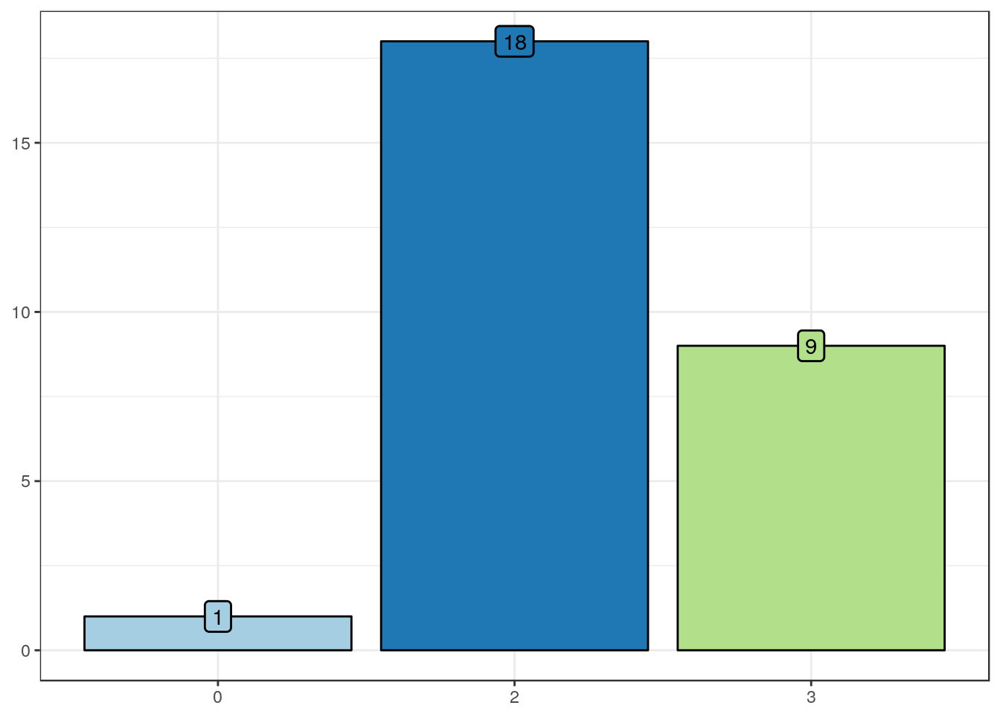

Â
Marker features
By TMA spots
Marker extent
Summary table
| Mean |
52.7 |
| Standard deviation |
42.1 |
| Median |
80 |
| Interquartile range |
90 |
| Mininum |
0 |
| Maximum |
100 |
Marker intensity
Summary table
| Absent |
31 (24) |
| Weak |
27 (21) |
| Moderate |
57 (44) |
| Strong |
15 (12) |
Marker H-score
Summary table
| Mean |
109.2 |
| Standard deviation |
100.5 |
| Median |
80 |
| Interquartile range |
185 |
| Mininum |
0 |
| Maximum |
300 |
By SP cases
Summarizing by the maximum value
Marker extent
Summary table
| Mean |
88.8 |
| Standard deviation |
22.3 |
| Median |
95 |
| Interquartile range |
10 |
| Mininum |
0 |
| Maximum |
100 |
Marker intensity

Summary table
| 0 |
1 (4) |
| 2 |
18 (64) |
| 3 |
9 (32) |
Marker H-score
Summary table
| Mean |
203.6 |
| Standard deviation |
76.4 |
| Median |
200 |
| Interquartile range |
82.5 |
| Mininum |
0 |
| Maximum |
300 |